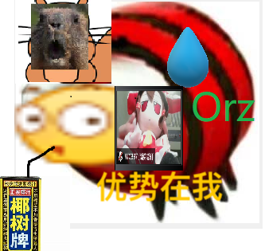

WC2022游寄
冻零冬眠营几日游，学习了LCT等算法
$8:15$ 左右把机房电脑打开了（居然要先按esc然后用鼠标点开系统），看到桌面上有vscode，没找到NOI-Linux（JS传统，事实证明只是我没看到），就趁着还没断网快速下了下插件，配置了下C++，敲了下板子，运行的时候exe被莫名其妙卡到后台了（？？？），任务管理器还没有权限调出来（离大谱），所以只好把template.cpp改成template2.cpp。（然后考试至始至终没打开vsc一直用的dev）
$8:30$ 拿到题目看了眼，一构造一传统一交互看的人头晕（真就和py老师说的那样讲的和考的没有任何关系）。
先看看T1，是个构造+括号序列，操作$1$~$4$都是将不同的序列改为同样的序列，想着似乎可以倒过来做比较方便。然后开始瞎想，感觉先在序列末尾加上一个()然后就比较容易满足$1$~$4$操作的格式，最后再把末尾()删掉，总之想到的都是乱搞。此时已经过去$1h$，一分没有丢掉T1去看T2.
看一眼T2发现我会莫队，于是$O(n \sqrt{n \log n})$的做法直接显然。但是一看数据$5\times 10^5$似乎并不想放莫队过去。继续思考发现删除元素似乎可以$O(1)$搞定，看到时限$5s$，就开心地写起了回滚莫队（此时我还没有意识到回滚莫队的巨大常数）。大概$30min$写完调完小样例，感觉太水了就迅速写了个对拍（听说后来发了大样例，不过我也没看见，不知道是不是这题），一看$n=1000$好像没啥问题，造了个5e5的数据跑了$15s$，立马感觉危，想办法开始卡常数，结果发现写的好像挺优雅的，只好给各个函数加了下inline就丢掉开摆～
T3显然不可做，我花了大量时间在这题而不是想办法优化T2应该说是这场比赛最大的失误。这题出的就很玄学，然后PDF题面中没开c++14且交互库用了srand(0)搞得我既不敢用rand又不敢用mt19937，离谱就离谱在题目说是有$5$次guess的机会但是按照这个交互库的写法相当于是你问$4$次返回$5$次而不是让你问$5$次，于是我非常sb地想到用$5$次问出$25$个字母是否出现然后根据已有信息基本锁定目标串随机选取的做法，浪费了大量时间在写meet in the middle（似乎时限$60$秒的话$2^{26}\times 26$瞎dp都能预处理出来？不怕有人卡评测机吗？）写完发现白干了，最后交了个随机程序上去，期望得分$0$。（顺便说句其实我蛮喜欢C风格的string的，不知道算不算邪教）
最后大概半个多小时开始写T1的暴力。暴力好烦，又要状压又要判断括号序列，而且只能拿$15$分，感觉一点也不值。突然发现不限制$5$和$6$操作的$25$分似乎白给就迅速写完交上去。这时候高三学长已经到机房里准备给我们讲课了，周围乱哄哄的，也没心思再写了，就$3min$换$25pts$感觉还挺值。
于是期望得分只有$25+60/100+0=85/125$，快乐打铁～
粗来交流下发现jcy和jth的T2都是普通莫队写的，jcy拿到了T1的暴力$50$分，jth似乎没拿到T1的白给分但是T3骗了$22$分（我这才发现自己根本没有用grader.cpp估分）。考完zc来问有没有人$160$以上似乎没有人举手。
听jcy说T1似乎是把括号转成树上问题（我居然连树都没有想到，不过估计想到了也不会做）
下午在学校签了停课保证书，$2:30$以后去吃了中下午饭。不得不说椰树牌椰汁还蛮好喝的（逃
晚上讲题交流，大家的回滚莫队都是$9s$只有我大常数选手是$15s$。
等明天出分吧（说不定T3还能骗到个$1pt$呢）
最终得分只有$90$，滚Cu了…
